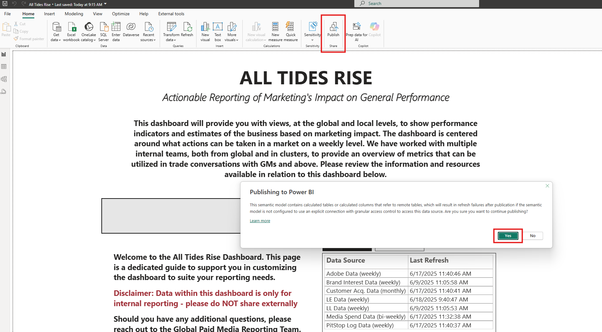

3 Dashboards
Welcome! This section will familiarize you with our dashboards. As a student assistant, you will support Tomas with a variety of tasks, including data updates, new visualizations, bug fixes, and feature development. Rather than a step-by-step Power BI guide, this section gives a brief overview on the dashboards, their important features, and the data sources used in our models.
3.1 Dashboards Overview
You will primarily work with two dashboards:
3.1.1 1. Weekly Media Plans (WMP)
- WMP Dashboard Link
- Based on the global media template, ensuring consistency and alignment across markets.
3.1.2 2. All Tides Rise (ATR)
- ATR Dashboard Link
- Provides global and local views of performance indicators and business estimates based on marketing impact.
- Focuses on actionable insights at the market and weekly level.
- Developed in collaboration with multiple internal teams to support trade conversations with GMs and above.
Tip: All other dashboards can be found in the workspace of the Paid Media team. Golabl Paid Media - Dashboards
3.2 Getting Started
To begin, familiarize yourself with the dashboards by understanding:
- Measures
- Data sources and dataflows
- Data model and relationships
Just click through the dashboards and try to understand how
3.3 Data Modeling in Power BI
- Linking Tables: Relationships are created using primary and foreign keys. Selecting the correct cardinality (one-to-one, one-to-many, many-to-many) is crucial.
- The most used tables are the Master Date Table and the Market Table. These connect to most other tables, providing a common date and market context.
- Backend Adjustments: Most backend data model adjustments can be done in Tabular Editor, which is faster than Power BI Desktop as it does not load frontend visualizations. However, we currently work mostly in the Power Query Editor to manage tables and queries.
- Find more information on Tabular Editor in the respective section of this book.
3.4 Data Sources
Especially for ATR, we manage a variety of data sources in different formats:
- Retail Cube: Company-wide retail data and metrics, connected directly.
- Adobe Data: Stored and connected from BigQuery.
- Customer Insights Team: Data from Customer Acquisition, often in Excel files.
- Global Media Template: Excel file, updated weekly.
- Asana: Task process data fetched into the dashboard (for WMP and ATR).
- Brand Interest & Category Interest: Data from Google, stored in BigQuery.
- Exchange Rates, Dates, Market Info: Also stored in BigQuery.
There are more sources you will encounter as you work with the dashboards. Data comes in various formats, offering opportunities for optimization and standardization to reduce maintenance.
WMP uses fewer sources, mainly the global media template, exchange rates, dates, and market information.
3.5 Important Features
3.5.1 Spend Conversion to DKK
- A calculated column in the planned media spend table converts spend from the GMT to DKK.
- This is done by multiplying the spend with exchange rates and fees for the respective week and market.
- Fees are stored in an Excel file.
3.5.2 Actualization Logic
- The GMT reports both planned and actual spend.
- To determine actualization, we compare reported spend at the most granular weekly level (Market, Channel, Subchannel, etc.).
- If
actual spend * 0.5 >= planned spend, it is considered actualized; otherwise, not actualized. - Once a week is actualized, all previous weeks are assumed actualized.
- Managed with a calculated column on the planned media spend table.
3.6 Publishing Changes or Data Refreshes
- Click the Publish button and follow the prompts.
- Select the workspace Global Paid Media.
